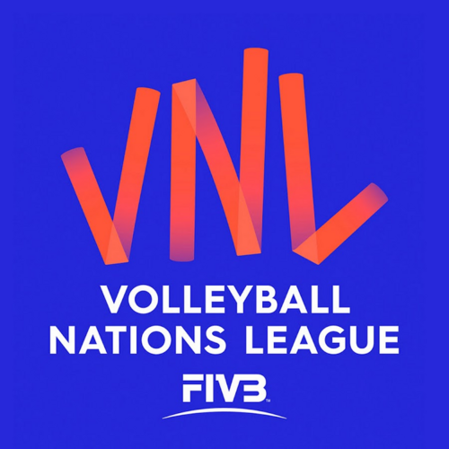

волейбол
волейбол — спортивна гра з м'ячем, у якій дві команди змагаються
на спеціальному майданчику, розділеному сіткою.
загальні відомостідекілька різних версій гри. Мета гри: направити м'яч над сіткою так, щоби він доторкнувся до ділянки суперника, та запобігти спробі гравців суперника зробити те саме. Для цього команда має торкнутися до м'яча не більше трьох разів (або, можливо, ще один раз під час блокування).
М'яч вводять у гру через подачу: гравець, який подає, завдає удару по м'ячу, направляючи його в бік суперника. Розіграш кожного м'яча триває до приземлення м'яча на майданчик, виходу в «аут» або порушення правил.
У волейболі команда, яка виграла розіграш, отримує очко (за системою «кожний розіграш — одне очко»). Коли команда, що приймає подачу, виграє розіграш, вона одержує очко і право подавати, її гравці переходять на одну позицію за годинниковою стрілкою.Волейбол (англ. volleyball від volley — «залп», «удар з льоту», і ball — «м'яч») — вид спорту, командна спортивна гра, в процесі якої дві команди змагаються на спеціальному майданчику, розділеному сіткою, прагнучи направити м'яч на сторону суперника так, щоб він приземлився на майданчику супротивника (добити до підлоги), або гравець команди, що захищається, припустився помилки. При цьому для організації нападу гравцям однієї команди дається не більше трьох торкань м'яча поспіль (на додаток до торкання на блоці). Центральний орган волейболу, як міжнародного виду спорту, що визначає зведення правил FIVB (англ.) — Міжнародна волейбольна федерація. Волейбол — олімпійський вид спорту з 1964 року. Волейбол — неконтактний, комбінаційний вид спорту, де кожен гравець має свою спеціалізацію на майданчику. Найважливішими якостями для гравців у волейболі є стрибучість для можливості високо піднятися над сіткою, реакція, координація, фізична сила для ефективних ударів. Для любителів волейбол — поширена розвага і спосіб відпочинку завдяки простоті правил і доступності інвентарю. Існують численні варіанти волейболу, що відгалузилися від основного виду, — пляжний волейбол (олімпійський вид з 1996 року), мініволейбол
історія гри Винахідником волейболу вважають Вільяма Джона Моргана, викладача фізичного виховання коледжу Асоціації молодих християн (YMCA) в місті Голіок (штат Массачусетс, США). 9 лютого 1895 року в спортивному залі він підвісив тенісну сітку на висоті 197 см і його учні, число яких на майданчику не обмежувалося, стали перекидати через неї баскетбольний м'яч. Морган назвав нову гру «мінтонет». Роком пізніше гру демонстрували на конференції коледжів асоціації молодих християн у Спрингфілді і за пропозицією професора Альфреда Т. Гальстеда отримала нову назву — «волейбол». У 1897 році були опубліковані перші правила волейболу. Загальні правила гри сформувалися в 1915—1925 роках. У країнах Америки, Африки, Європи практикувався волейбол з шістьма гравцями на майданчику, в Азії — з дев'ятьма або дванадцятьма гравцями на майданчику 11×22 м без зміни позицій гравцями під час матчу. У 1922 році проведені перші загальнонаціональні змагання — у Брукліні відбувся чемпіонат YMCA за участю 23 чоловічих команд. У тому ж році була утворена федерація баскетболу і волейболу Чехословаччини — перша у світі спортивна організація з волейболу. У другій половині 1920-х років виникли національні федерації Болгарії, СРСР, США та Японії. У той же період формуються головні аспекти техніки — подача, приймання, нападний удар і блок. На їх основі виникає тактика командних дій. У 1930-і роки з'явилися груповий блок і страхування, варіювалися нападні й обманні удари. У 1936 році на конгресі Міжнародної федерації з гандболу, що проводився в Стокгольмі, делегація Польщі виступила з ініціативою організувати технічний комітет з волейболу як частину федерації з гандболу. Утворили комісію, до якої увійшли 13 країн Європи, 5 країн Америки і 4 країни Азії.Члени цієї комісії як основні прийняли американські правила з незначними змінами: виміри проводили в метричних пропорціях, м'яча можна було торкатися всім тілом вище пояса, після того, як торкнувся м'яча на блоці, гравцю було заборонено повторне торкання поспіль, висота сітки для жінок — 224 см, зона подачі була суворо обмежена.
ліга націй
Ліга націй (англ. Volleyball Nations League)[1] — щорічний турнір національних волейбольних збірних, перший розіграш якого відбувся у 2018 році[2]. Відбірковим змаганням для потрапляння в Лігу Націй є Кубок претендентів.
12 жовтня 2017 року в Парижі на святкуванні 70-річчя створення Міжнародної федерації волейболу було оголошено про створення турніру. Волейбольна Ліга Націй замінила у міжнародному календарі чоловічу Світову лігу та жіночий Гран-Прі.
Перший розіграш турніру розпочався 15 травня 2018 року для жіночих команд та 25 травня для чоловічих. Формат Волейбольної Ліги Націй передбачає участь 16 команд, з яких 12 є «основними» (такими, що зберігають місце у Лізі Націй незалежно від результатів), а 4 — «челленджерами-претендентами». Відбірковим змаганням для потрапляння в Лігу Націй є Кубок претендентів (FIVB Volleyball Challenger Cup).
Учасниками першого розіграшу Ліги Нації у чоловіків стали: США, Бразилія, Аргентина, Китай, Іран, Японія, Росія, Сербія, Італія, Франція, Польща та Німеччина. «Челленджери» — Австралія, Північна Корея, Канада та Болгарія.
У жінок: Бразилія, США, Таїланд, Туреччина, Республіка Корея, Китай, Японія, Росія, Сербія, Італія, Нідерланди та Німеччина. «Челленджери» — Домініканська Республіка, Аргентина, Польща та Бельгія.
Переможцями в дебютному сезоні стали чоловіча збірна Росії та жіноча збірна США.
У 2020 році турніри Ліги націй, а також відбірного змагання до неї — Кубка претендентів[1] були спочатку перенесені, а потім зовсім скасовані через пандемію коронавірусної інфекції COVID-19[3][4].

volleyball national league
офіційний сайт ліги націй
Go somewhere